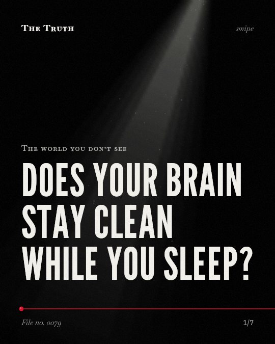

The world you don’t see
Does your brain stay clean while you sleep?

Your brain clears waste during sleep.
Natural sleep or anesthesia is associated with a 60% increase in the brain's interstitial space. This process increases the rate of β-amyloid clearance.
Established. Several studies combined, or official data. The evidence backs this.
What the research found
Patients with Parkinson's disease exhibited a lower ALPS index than those with piRBDs (P = 0.036), and both patient groups showed a lower ALPS index than healthy controls (P < 0.001 and P = 0.001).
“Patients with PD exhibited a lower ALPS index than those with piRBDs (P = 0. 036), and both patient groups showed a lower ALPS index than healthy controls (P < 0.001 and P = 0.001).”
Observational study, 2022. Si et al., npj Parkinson s Disease.
Natural sleep or anesthesia is associated with a 60% increase in the interstitial space, which increases the rate of β-amyloid clearance.
“we show that natural sleep or anesthesia are associated with a 60% increase in the interstitial space, resulting in a striking increase in convective exchange of cerebrospinal fluid with interstitial fluid. In turn, convective fluxes of interstitial fluid increased the rate of β-amyloid clearance during sleep.”
Study, 2013. Xie et al., Science (New York, N.Y.).
Lifestyle choices such as sleep position, alcohol intake, exercise, omega-3 consumption, intermittent fasting and chronic stress all modulate glymphatic clearance.
“lifestyle choices such as sleep position, alcohol intake, exercise, omega-3 consumption, intermittent fasting and chronic stress all modulate glymphatic clearance.”
Experiment, 2020. Reddy & Werf, Brain Sciences.
The pooled prevalence of sleep disorders in populations with impaired glymphatic-related function was 44.9% (95% CI: 34.9–55.3%).
“The pooled prevalence of sleep disorders in populations with impaired glymphatic-related function was 44. 9% (95% CI: 34. 9–55. 3%), with substantial heterogeneity (I2 ≈ 95%).”
Meta-analysis, 2026. Hein et al., Biology.
D zz values, derived from projection fiber areas, D yy and D zz values from association fiber areas, as well as ALPS and D yzmean values were significantly reduced in OSA over controls.
“D zz values, derived from projection fiber areas, D yy and D zz values from association fiber areas, as well as ALPS and D yzmean values were significantly reduced in OSA over controls.”
Study, 2022. Roy et al., Frontiers in Neuroscience.
The vast majority of waste clearance occurs during sleep.
“the vast majority of waste clearance occurs during sleep;”
Experiment, 2020. Reddy & Werf, Brain Sciences.
The waste clearance system.
The vast majority of waste clearance occurs while you sleep. This system is modulated by your sleep position, alcohol intake, exercise, and chronic stress.
A compromised system.
That may be why sleep disorders and impaired waste clearance are linked. Disorders like sleep apnea and Parkinson's disease are associated with reduced clearance.
This part is our reading of the evidence, not a finding.
The morning fog.
You sit at your desk at 9 a.m. and feel a heavy pressure in your head that lingers until lunch time.
The honest summary
The evidence shows that sleep is a primary period for glymphatic waste clearance, though specific disorders like sleep apnea and Parkinson's disease are associated with impaired clearance.
While sleep is linked to waste clearance, some studies indicate that sleep disorders and glymphatic dysfunction co-occur rather than one necessarily causing the other.
What are you leaving behind?
Sources
- Oliver Cameron Reddy, Ysbrand D. van der Werf (2020). The Sleeping Brain: Harnessing the Power of the Glymphatic System through Lifestyle Choices. Brain Sciences. Experiment, cited 279 times.
- Xie L, Kang H, Xu Q, Chen MJ, Liao Y, Thiyagarajan M, O'Donnell J, Christensen DJ, Nicholson C, Iliff JJ, Takano T, Deane R, Nedergaard M (2013). Sleep drives metabolite clearance from the adult brain. Science (New York, N.Y.). Study, cited 5,369 times.
- Zaw Myo Hein, Che Mohd Nasril Che Mohd Nassir, Hafizah Abdul Hamid et al. (2026). The Prevalence of Sleep Disorders in Populations with Glymphatic Dysfunction: A Systematic Review and Meta-Analysis. Biology. Meta-analysis, cited 2 times.
- Xiaoli Si, Tao Guo, Zhiyun Wang et al. (2022). Neuroimaging evidence of glymphatic system dysfunction in possible REM sleep behavior disorder and Parkinson’s disease. npj Parkinson s Disease. Observational study, cited 198 times.
- Bhaswati Roy, Alba Nunez, Ravi Aysola et al. (2022). Impaired Glymphatic System Actions in Obstructive Sleep Apnea Adults. Frontiers in Neuroscience. Study, cited 90 times.
Also read for this file, not quoted
- Benveniste et al. (2019). Glymphatic System Function in Relation to Anesthesia and Sleep States.
This file was researched and drafted by software, then checked by rules a model cannot talk its way around: each quote above was matched word for word against the paper, and every number had to appear in it. How files are made.